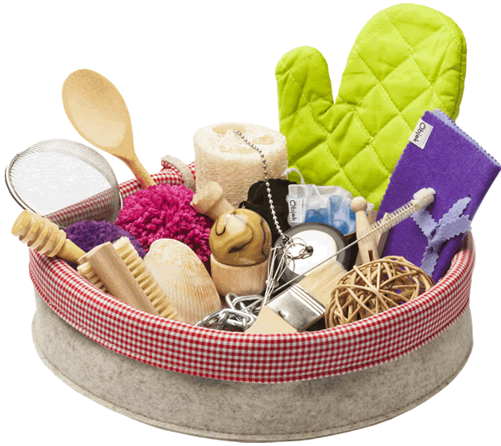

El cesto de los tesoros
para jugar
no hacen falta juguetes
Cuando un bebé recibe un juguete, lo observará, se lo llevará a la boca y lo manipulará. Jugará con él durante un tiempo pero pronto perderá interés por el juguete y fijará su atención en la caja y el envoltorio que tienen otro sonido, otro sabor y se pueden deformar, romper...
Al bebé no le interesan los juguetes, sino los nuevos descubrimientos que puede hacer con lo que tiene entre manos; por eso cualquier objeto cotidiano le resultará más atractivo que los “juguetes pensados para bebés”.


es un juego,
no es un juguete
El Cesto de los Tesoros de Öbjek es una propuesta educativa pensada para ofrecer a los bebés una actividad de exploración y juego; una manera de aprovechar la actividad espontánea de niños y niñas para su propio beneficio.
Consiste en un cesto repleto de objetos cotidianos de diferentes materiales, tamaños, formas y texturas cuyo objetivo es proporcionar estímulo, desarrollo y experiencia a los cinco sentidos del bebé.
favorece su desarrollo
y estimula
los cinco sentidos
En esta etapa, los bebés muestran gran interés por todo lo que ocurre a su alrededor, se mantienen atentos a su entorno y a la espera de lo próximo que va a ocurrir; están preparados e impacientes por aprender. Sin embargo, los juguetes dirigidos a esta edad suelen ser muy limitados. El Cesto de los Tesoros de Öbjek ofrece una experiencia de interés absorbente y posibilitadora para el aprendizaje fundamental de los bebés.
cómo
utilizarlo
-
Si el bebé todavía no sé sienta lo colocaremos tumbado de espaldas para que pueda elegir la postura que más cómoda le resulte. Y dispondremos parte de los objetos del cesto a su alrededor, unos al alcance de sus manos y otros progresivamente más lejos.
-
Colocaremos el Cesto de los Tesoros cerca del bebé para que pueda alcanzarlo. El bebé comenzará a elegir aquellos objetos que más le atraigan, los observará, los moverá, se los llevará a la boca, los agitará, los apartará...
-
Con la movilidad se abre el camino a cualquier tipo de exploración y es precisamente en esta fase cuando la actividad de meter y sacar objetos de sus recipientes se convierte en una ocupación absorbente.
cómo
utilizarlo
todo son
beneficios
todo son
beneficios
Psicomotricidad
Favorece el desarrollo de la motricidad fina en la interacción con cada objeto particular así como la motricidad gruesa en el deseo e intento de alcanzar objetos distantes.
Toma de decisiones
Al tomar y descartar objetos según su voluntad, el bebé comenzará a tomar sus propias decisiones y experimentará el hecho de elegir. Serán sus primeros pasos en la toma de decisiones
Descubrir
Cuando el bebé toma objetos y se los lleva a la boca, los examina, los chupa, los manipula... es así como descubre su peso, su tamaño, su forma... las texturas, el sonido, el olor...
Los sentidos
El Cesto de los Tesoros de Öbjek está diseñado para posibilitar, a través del juego, estímulos de calidad que aportarán múltiples experiencias en el desarrollo de la vista, oído, tacto, olfato y gusto.
Concentración
El Cesto de los Tesoros se convierte en una actividad absorbente para el bebé. Pasará largos ratos examinando y manipulando objetos y lo cual revierte directamente en el desarrollo de su capacidad de concentración.
Autonomía
Con el Cesto de los Tesoros el bebé aprende por sí mismo; el juego respeta su ritmo y sus necesidades porque no depende del adulto. El bebé es protagonista de su actividad y su mundo favoreciendo así su propia autonomía.
siéntate
y observa
La persona adulta deberá ser un observador atento y tranquilo. Su presencia y muestra de interés proporcionará al bebé la seguridad que éste necesita para enfrentarse a la nueva experiencia que proporciona el Cesto de los Tesoros de Öbjek.
Debemos aceptar que a los adultos nos resulta difícil no intervenir. Dudamos de nuestro papel si no nos mostramos activos, ayudándoles a tomar el objeto por el lado “correcto” o mostrándole sus posibles usos. Sin embargo, es la no-intervención y la confianza que genera en el bebé nuestra sola presencia la que le permite jugar, disfrutar y aprender.
Hay que reconocer el derecho de los bebés a que no se les moleste, así como el valor educativo de su juego libre y espontáneo. Aunque no te resulte fácil, confía en tu bebé y déjale hacer. Siéntate y observa, y disfruta viéndolo disfrutar.

-
Objetos naturales
-
Objetos de madera
-
Objetos de metal
-
Objetos de tela
En el cesto de los tesoros de Öbjek encontrarás objetos de cualquier tipo de material a excepción de uno: el plástico.
El Cesto de los Tesoros contiene objetos sencillos, cotidianos, pero ninguno de ellos es casual. En Öbjek dedicamos esfuerzo y atención constante a la selección de los objetos que te ofrecemos en el Cesto de los Tesoros: hemos incluido objetos grandes y pequeños; unos son de fieltro y otros de terciopelo; algunos están fabricados en madera y otros combinan madera y metal; encontrarás objetos de formas redondeadas así como objetos más rectos y angulosos; objetos silenciosos y también otros tintineantes; unos son fríos y otros son cálidos; algunos huelen a metal, otros a bosque, otros a mar...
Contactar con nosotros

Newsletter
Diseño y desarrollo web desde el taller de -Interzonas-